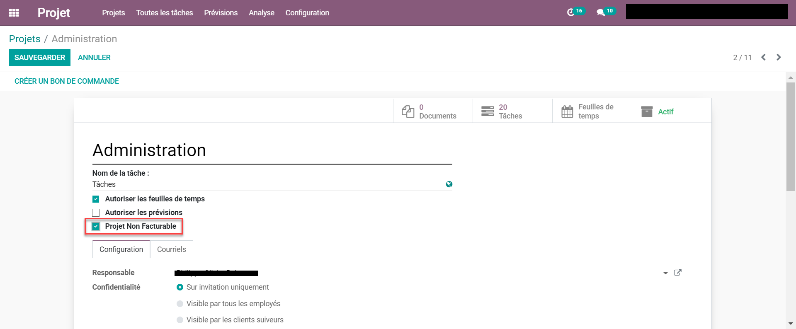
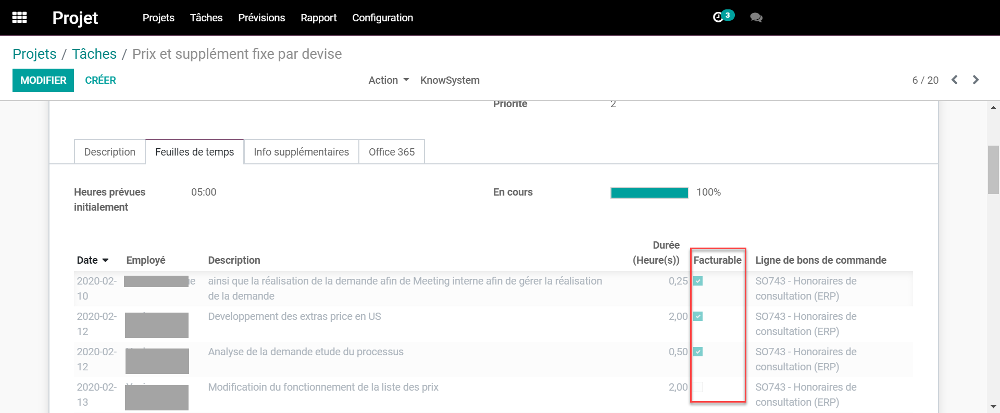
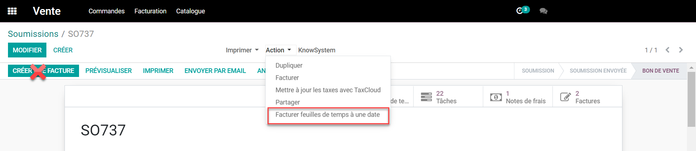
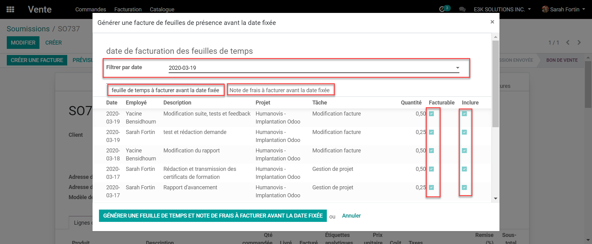
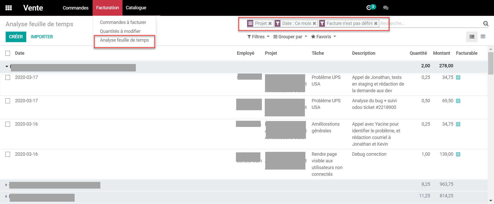
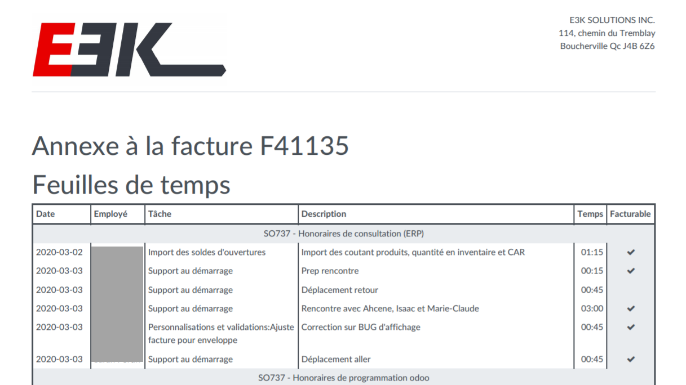
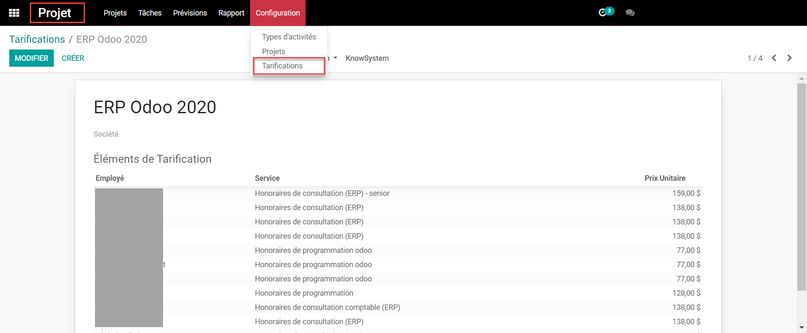
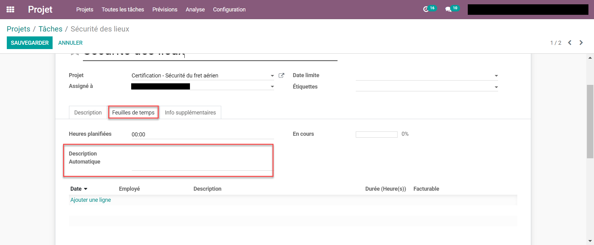
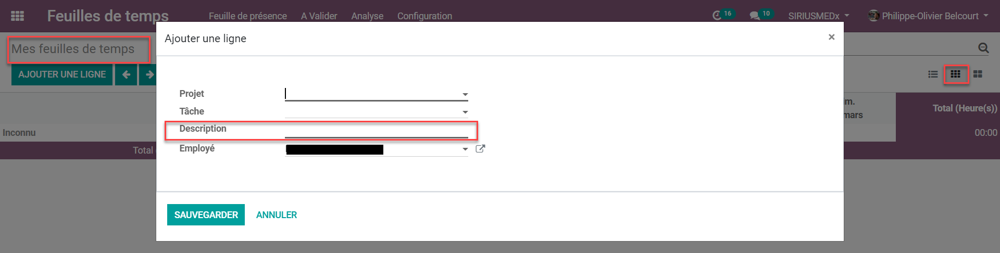
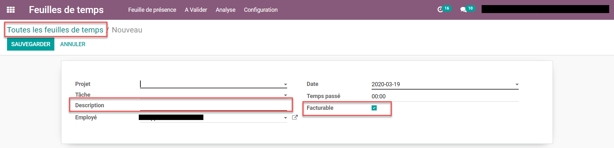

E3K PSA
Afin de répondre à un besoin spécifique dans le marché des entreprises de service qui refacture du temps sur des projets, nous avons développé un module qui apporte plusieurs modification / amélioration aux module de base de Odoo.
Description
Notre module Odoo PSA (professionnal service automation) fonctionne de façon interdépendante avec les modules suivants:
- Projet
- Feuille de temps
- Facturation
- Notes de frais
- Comptabilité
Voici une liste des améliorations effectuées, par thème, ainsi que la description de la fonctionnalité.
Facturation
1. Projet et ligne de feuille de temps : facturable / non facturable.
Nous avons ajouté une case dans la configuration des projets pour rendre les projets souhaité "non facturable par défaut".

Chacune des feuilles de temps, autant dans les tâches de projet que dans le module Feuille de temps, on maintenant une case "facturable". Ce champ est également ajouté dans les filtres personnalisés afin de pouvoir filtrer, ou grouper, les heures facturable ou non.

2. Facturation à une date précise.
Nous avons ajouter une option dans les bons de commande pour sélectionner une date de facturation des feuilles de temps et des notes de frais (comptes de dépenses) Sans cette option, le fonctionnement de base de Odoo est de facturer toutes les feuilles de temps livrée au moment ou on appuis sur "créer une facture". Il est bien important de ne pas utiliser la fonction de base de Odoo et d'utiliser cette nouvelle action.
Notez bien que le bon de commande doit avoir été créé à partir de la configuration du projet ou à partir de l'approbation d'un bon de commande sur lequel il y a un service qui fait la création d'un projet - tel que la fonctionnalité de base de Odoo.

Il faudra entrer une date pour à laquelle nous voulons générer toutes les feuilles de temps et les notes de frais, qui n'ont jamais été facturées.
Il sera ensuite possible de choisir si nous voulons facturer ou non certaine lignes, et nous souhaitons inclure ou non certaine ligne.
Si on choisi de rendre non facturable, la ligne apparaîtra sur la facture en tant que non facturable, donc à 0$, mais le détail sera présent et la ligne de feuille de temps sera définie comme ayant été facturée.
Si on choisit de ne pas inclure une ligne, la ligne n’apparaîtra pas sur la facture et sera de nouveau disponible lors de la prochaine facturation.

3. Analyse des feuilles de temps / travaux en cours
Dans le module Vente, sous l'onglet ''À facturer'', nous avons ajouter une vue pour l'analyse des feuilles de temps. C'est avec cette vue qu'il est possible d'analyse les travaux en cours et faire des modifications avant la facturation périodique si désiré.

4. Ajout d'une annexe à la facture incluant le détail de toutes les feuilles de temps incluses dans la factures.
Nous avons ajouté une annexe à la facture qui rapporte toutes les feuilles de temps, facturable ou non, par ligne de bon de commande.

Projet
1. Tarification des projets ; taux par employés.
Nous avons ajouté la possibilité de définir différents taux de tarification afin de faciliter la configuration
de la facturation des projet au taux de l'employé. Dans l’onglet configuration,
il est possible de créer différentes tarifications et ajouter les employés à des taux spécifique.
Ensuite, lors de la création d'un bon de commande, à partir de la configuration du projet,
on pourra choisir la bonne tarification et Odoo fera le lien entre les tâches de ce projet et le taux par employé.

2. Description automatique
Dans l'onglet feuille de temps, nous avons ajouté un champs qui permet de mettre une description
automatique pour toutes les ligne de feuilles de temps lié à cette tâche. Si le champs est vide,
alors l'utilisateur doit documenter lui-même la description.
3. Visibilité et modification des ligne de feuilles de temps dans les tâches
Tous les usagers qui ont accès aux tâches peuvent voir toute les feuilles de temps associée à cette tâches,
mais ne peuvent pas les modifier, peu importe leur niveau de droit.

Feuille de temps
1. Ajout du champ description dans l'ajout d'une ligne de feuille de temps.
Nous avons ajouté la possibilité de renseigner le champs description directement à partir de l'ajout
d'une ligne dans la vue grille.

Dans la vue liste, sous l'onglet "Toutes les feuilles de temps",
ajouter une ligne, nous avons ajouté la description ainsi que le champs facturable / non facturable.
